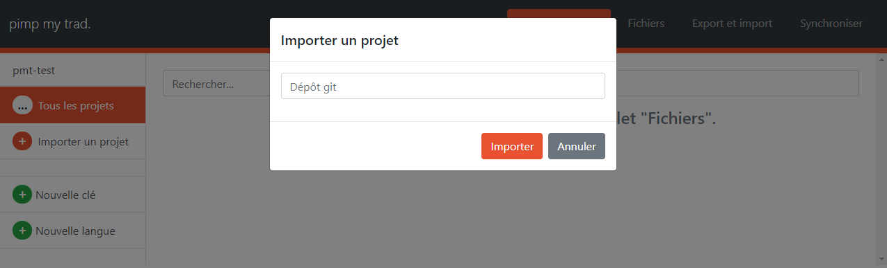
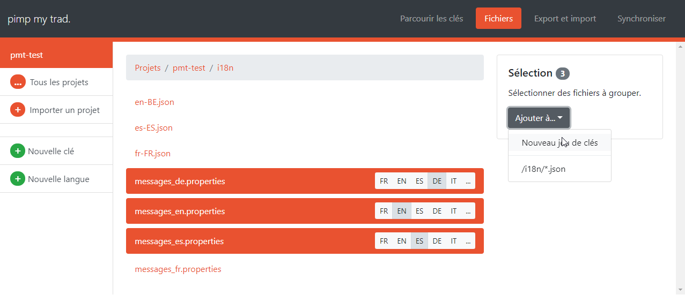
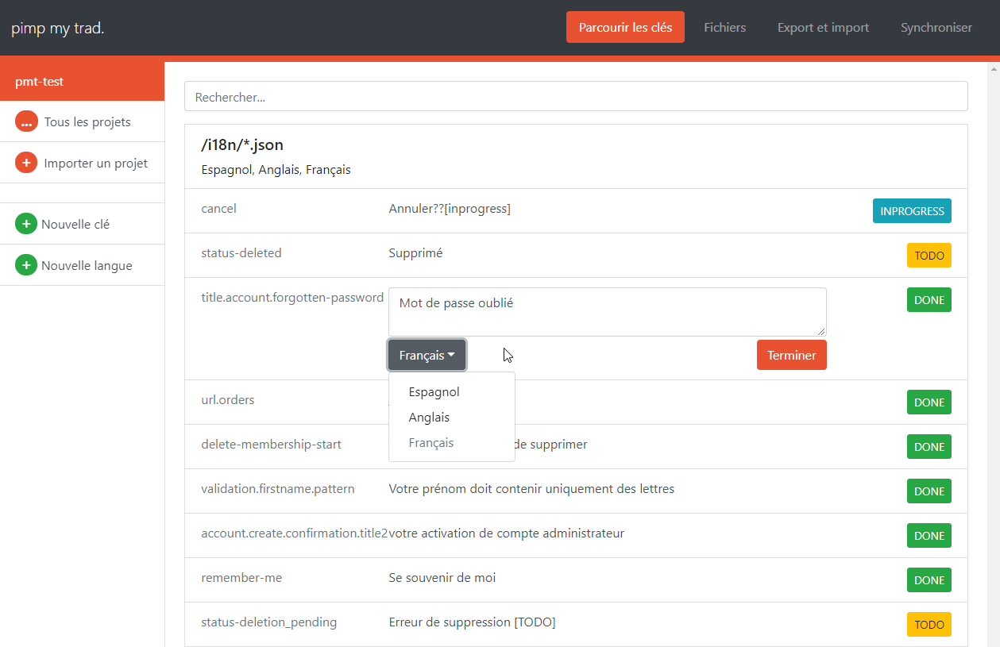

Project goals
- translate apps faster: Pimp my Trad integrates with git to edit your files directly
- prevent mistakes and allow automation: avoid manually editing translation files
- ease communication with translation agencies by exporting relevant data to a suitable format
Usage
Importing and setting up keysets

To get started, import a project from a git repository (in the future, other VCS might be supported).

By browsing to the "Fichiers" tab, you may then create a keyset. A keyset groups files that refer to the same translation keys together. One such file might look like that.
GREET_VISITOR=Welcome
While the corresponding file in the same keyset but for another language might read as follows.
GREET_VISITOR=Bienvenue
Beside .properties files, .json files are supported. Support for other formats can easily be added (see sncf.oui.pmt.domain.keyset.MapEncoder).
Managing keys

Back to the main screen ("Clés" tab), you should now see your translation keys as well as their value in the default language (French).
Each key has a completion state: TODO, INPROGRESS, DONE (and CONFLICT).
By clicking one of the state tags on the right, you may quickly filter which keys need work -- ie which keys have missing (TODO) or temporary translations. You may also use the search bar to quickly find a key.
Most of the time, the state is inferred (for instance, if a key is empty for a given language, it probably is TODO). However, you may add a tag to a translation to give a hint about the key state. For instance, the INPROGRESS state has no special meaning; you could use it to indicate that you have requested a translation for that particular key.
Adding keys and languages
From the sidebar, you may add new keys as well as new languages. Both these features let you select which project and keyset should be modified.
Pimp my Trad will try to guess a fitting name for new files when adding a new language.
Version control
By hitting "Synchroniser", the repository will receive your updated translations (and you will receive updates as well).
Since Pimp my Trad uses Git, it might run into conflicts; should this happen, you will be warned and relevant keys will have the CONFLICT state. You will be given the opportunity to fix conflicts from the interface before clicking "Synchroniser" again.
Planned features
The tool was built to ease our translation process. One essential feature that will come later is the ability to export and import keys in a format that is suitable to communicate with our translation agency. The INPROGRESS state will be used to indicate that an export has been made.
Support for more languages (and language-region combinations) and more file formats is planned, depending on our needs. The former could be implemented through configuration files.
The search bar has an extremely simple filtering behaviour which has to be changed.